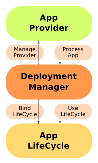
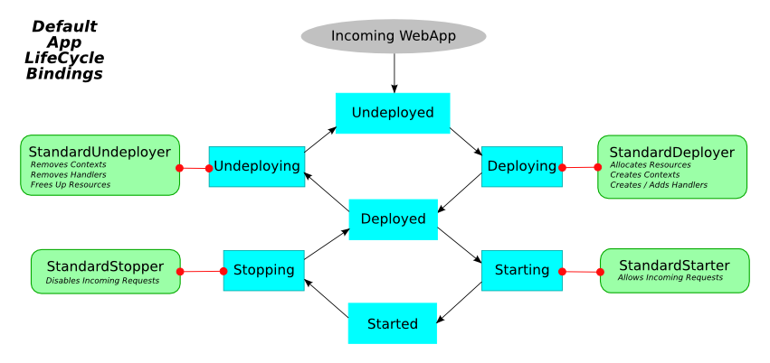

Version: 9.2.3.v20140905
Version: 9.2.3.v20140905 |
|
private support for your internal/customer projects ... custom extensions and distributions ... versioned snapshots for indefinite support ... scalability guidance for your apps and Ajax/Comet projects ... development services from 1 day to full product delivery
Jetty 围绕一个可扩展的 Deployment Manager 架构,连同 Web 应用程序将要经历的正式的生命周期而构建.
对于 Jetty 要服务的内容(静态或动态),你需要创建一个 ContextHandler, 并在适当的地方将它添加到 Jetty 中.一个可以插入式的 DeploymentManager 在 Jetty 7 中存在,使得这个处理更简单.
Jetty 分发包包含了示例 DeploymentManager 配置去部署在目录中找到的 WAR 文件到 Jetty,同样部署 Jetty context.xml 文件到 Jetty 中.
DeploymentManager 是典型 webapp 部署机制的核心;它以一个应用程序生命周期图的组合运作,应用程序 Providers 找到和提供应用程序到 应用程序生命周期图中,图中的一系列的绑定控制着部署的流程.
|  |
在 Jetty 部署一个应用程序之前, AppProvider 识别 App,然后提供给 DeploymentManager.Jetty 分发包中的主要的 AppProvider 是 WebAppProvider.
DeploymentManager 的核心特征是 应用程序生命周期图
 |
这个图中的节点(nodes)和边缘(edges)是预定义在 Jetty 中的,可以找到最常见的动作和状态.这些 nodes 和 edges 不是硬编码的; 你可以根据你的需求(比如,对于添加工作流(workflow)、审批(approvals)、分期(staging)、分布(distribution)、协调部署(coordinated deploys)用于集群或云的任意复杂的需求,等等)调整和添加它们.
新的应用程序进入这个图的时候是 Undeployed 节点, java.lang.String DeploymentManager.requestAppGoal(App,String)
方法推动它们遍历上面的图.
一系列的 AppLifeCycle.Bindings
定义了标准行为, 处理 deploying、starting、stopping 和 undeploying 中的应用程序.如果你选择,你可以编写自己的 AppLifeCycle.Bindings,
并将它们分配给应用程序生命周期图的任意地方.
你编写的新的 AppLifeCycle.Binding 示例的实现可以包括:
验证进来的应用程序.
阻止已知的被禁止的应用程序的部署.
提交安装应用程序审计服务在企业环境中.
在集群或云环境中分步应用程序到其它的节点中.
发邮件给所有者(owner)/管理者(admin)应用程序的状态的变化.
有四种默认的绑定:
StandardDeployer —在适当的位置将 ContextHandler 部署到 Jetty 中.
StandardStarter — 设置 ContextHandler 为 started, 并开始接收传入的请求.
StandardStopper — 停止 ContextHandler 并停止接收传入的请求.
StandardUndeployer — 将 ContextHandler 从 Jetty 中移除.
|  |
第5个,非标准的绑定,称为 Debug Binding,也可以用于调试.它记录应用程序生命周期的各种转换.
WebAppProvider 用于打包为 WAR 文件,展开为目录,或声明在 Jetty 可部署描述符 XML 文件 的 web 应用程序的部署. 它支持热(重新)部署.
WebAppProvider 的基本操作是定期扫描部署目录.在标准的 Jetty 分发包中,这个配置在 ${jetty.home}/etc/jetty-deploy.xml 文件中.
上面的配置将创建一个 DeploymentManager 作为一个 Server LifeCycle Bean, 使用下面的配置被追踪,
传递给 HandlerContainer 的引用为已经被发现的且被部署的 webapps(A passed in reference to the HandlerContainer into which the discovered webapps are deployed).
这个通常是一个引用指向可在 ${jetty.home}/etc/jetty.xml 文件中找到的 id="Contexts",
它自身是 ContextHandlerCollection 的一个实例.
是一个目录的文件路径或 URL 用来扫描 web 应用程序.
扫描遵循以下的规则:
Base 目录必须存在
隐藏文件(以 "." 开始)被忽略
以 ".d" 结尾的目录被忽略.
常用的 CVS 目录 "CVS" 和 "CVSROOT" 被忽略.
所有的 *.war 文件被认为是 自动部署 的.
所有的 *.xml 文件被认为是
可部署的 context 描述符
在特殊的情况中,也就是 WAR 文件和 XML 文件存在相同的基名称,WAR 文件被标记为不可部署的,XML 文件被配置和引用 WAR 文件.(见 配置一个特殊的 Web 应用程序 Deployment )
目录被认为是可以部署的
在特殊的情况中,也就是一个目录和 WAR 文件有着相同的名称,目录被标记为不可部署的,WAR 文件被自动部署.
在特殊的情况中,一个目录和 XML 文件有着相同的名称,目录被标记为不可部署的, XML 文件被配置,并引用目录.
所有其他的目录被自动部署.
如果自动部署被使用,特别的文件名称 root.war 或者
目录名称为 root 的目录将被部署到 "/" context path.
特殊的默认的 Servlet web 描述符用于所有的 Web 应用程序.这个描述符的目的是包含 Web 应用程序常用的配置在 Web 应用程序自己的
/WEB-INF/web.xml 被应用前.
${jetty.home}/etc/webdefault.xml 随着 Jetty 分发包一起提供,控制 JSP 和 servlets 的配置,
还有 mimetypes 和其它的基本的元数据.
两次 monitoredDirName 之间清理的周期(以秒为单位)用于目录的变化:新的 contexts 被部署,
修改过的 contexts 被重新部署,或者移除 contexts 变为未部署的.
如果此参数为 true,所有压缩的 WAR 或 zip 文件被解压到一个临时目录在被部署前. 这是明智的,如果在 web apps 中有未编译的 JSPs.
参数为 boolean,选择标准的 Java 父加载器优先代理(parent first delegation) 或 servlet 规范 webapp classloading 优先级 被使用.后者是默认的.